1 Αξιοσημείωτοι κύκλοι τριγώνου
1.1 ΜΕΡΟΣ 1: Ο ΠΕΡΙΓΕΓΡΑΜΜΕΝΟΣ ΚΥΚΛΟΣ ΤΡΙΓΩΝΟΥ (CIRCUMCIRCLE)
1.1.1 Α. Ορισμοί
- Περιγεγραμμένος Κύκλος:
Ο κύκλος ο οποίος διέρχεται και από τις τρεις κορυφές \(A\), \(B\) και \(\Gamma\) ενός τριγώνου \(\triangle AB\Gamma\) ονομάζεται περιγεγραμμένος κύκλος του τριγώνου.
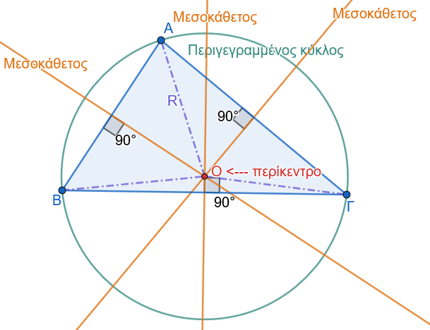
- Περίκεντρο:
Το κέντρο του περιγεγραμμένου κύκλου ονομάζεται περίκεντρο, συμβολίζεται με το γράμμα \(O\), και είναι το σημείο στο οποίο συντρέχουν οι μεσοκάθετοι των τριών πλευρών του τριγώνου.
- Ακτίνα \(R\):
Η απόσταση του περικέντρου \(O\) από τις κορυφές του τριγώνου είναι σταθερή και ίση με την ακτίνα του περιγεγραμμένου κύκλου: \[OA = OB = O\Gamma = R\]
1.1.2 Β. Θεωρήματα & Πορίσματα
Θεώρημα 1
Οι μεσοκάθετοι των τριών πλευρών κάθε τριγώνου συντρέχουν σε ένα σημείο, το οποίο είναι το περίκεντρο του τριγώνου.
Απόδειξη:
Έστω τρίγωνο \(\triangle AB\Gamma\). (Σχήμα 1)
Θεωρούμε τις μεσοκαθέτους των πλευρών \(AB\) και \(A\Gamma\), οι οποίες τέμνονται σε ένα σημείο \(O\) (ταυτίζονται μόνο αν οι πλευρές είναι συνευθειακές, πράγμα άτοπο για τρίγωνο).
Επειδή το σημείο \(O\) ανήκει στη μεσοκάθετο της πλευράς \(AB\), ισαπέχει από τα άκρα \(A\) και \(B\): \[OA = OB \quad (1)\] Επειδή το σημείο \(O\) ανήκει στη μεσοκάθετο της πλευράς \(A\Gamma\), ισαπέχει από τα άκρα \(A\) και \(\Gamma\): \[OA = O\Gamma \quad (2)\] Από τις σχέσεις \((1)\) και \((2)\) προκύπτει άμεσα ότι: \[OB = O\Gamma\] Η σχέση αυτή δηλώνει ότι το σημείο \(O\) ισαπέχει από τα άκρα \(B\) και \(\Gamma\) της τρίτης πλευράς \(B\Gamma\).
Συνεπώς, από τη χαρακτηριστική ιδιότητα της μεσοκαθέτου, το σημείο \(O\) ανήκει και στη μεσοκάθετο της πλευράς \(B\Gamma\).
Άρα, οι τρεις μεσοκάθετοι των πλευρών του τριγώνου συντρέχουν στο ίδιο σημείο \(O\), το οποίο είναι το κέντρο του κύκλου που διέρχεται από τις κορυφές \(A, B, \Gamma\) με ακτίνα \(R = OA = OB = O\Gamma\).
Πόρισμα 1
Σε κάθε ορθογώνιο τρίγωνο \(\triangle AB\Gamma\) (\(\widehat{A} = 90^\circ\)), το περίκεντρο \(O\) συμπίπτει με το μέσο της υποτείνουσας \(B\Gamma\), και η ακτίνα του περιγεγραμμένου κύκλου ισούται με το μισό της υποτείνουσας: \[R = \dfrac{B\Gamma}{2}\]
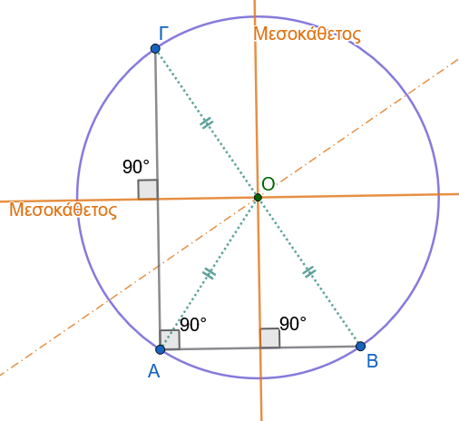
1.1.3 Γ. Εφαρμογές
Εφαρμογή 1
Αν \(O\) είναι το περίκεντρο οξυγωνίου τριγώνου \(\triangle AB\Gamma\), να αποδειχθεί ότι η γωνία \(\widehat{BO\Gamma}\) που σχηματίζεται στο περίκεντρο είναι διπλάσια της γωνίας \(\widehat{A}\) του τριγώνου: \(\widehat{BO\Gamma} = 2\widehat{A}\).
Λύση:
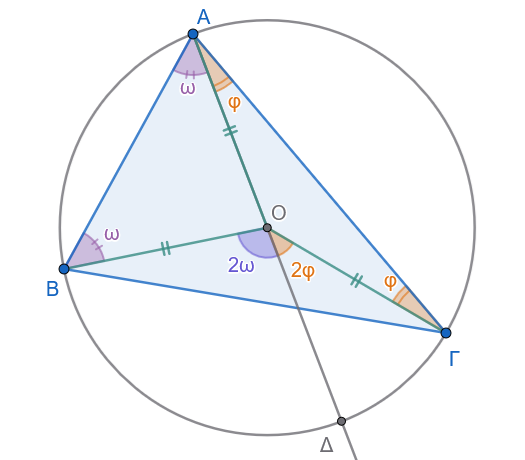
Φέρουμε την ημιευθεία \(AO\), η οποία τέμνει τον περιγεγραμμένο κύκλο στο σημείο \(\Delta\), οπότε το ευθύγραμμο τμήμα \(A\Delta\) είναι διάμετρος του κύκλου.
Στο τρίγωνο \(\triangle OAB\), επειδή \(OA = OB = R\), το τρίγωνο είναι ισοσκελές.
Συνεπώς, οι προσκείμενες στη βάση γωνίες είναι ίσες: \(\widehat{OAB} = \widehat{OBA}\).
Η γωνία \(\widehat{BO\Delta}\) είναι εξωτερική γωνία του τριγώνου \(\triangle OAB\), άρα ισούται με το άθροισμα των δύο απέναντι εσωτερικών γωνιών: \[\widehat{BO\Delta} = \widehat{OAB} + \widehat{OBA} = 2\widehat{OAB} \quad (1)\] Ομοίως, στο ισοσκελές τρίγωνο \(\triangle OA\Gamma\) (\(OA = O\Gamma = R\)), η γωνία \(\widehat{\Gamma O\Delta}\) είναι εξωτερική γωνία, οπότε: \[\widehat{\Gamma O\Delta} = \widehat{OA\Gamma} + \widehat{O\Gamma A} = 2\widehat{OA\Gamma} \quad (2)\] Προσθέτοντας κατά μέλη τις σχέσεις \((1)\) και \((2)\), έχουμε: \[\widehat{BO\Delta} + \widehat{\Gamma O\Delta} = 2\widehat{OAB} + 2\widehat{OA\Gamma} \implies \widehat{BO\Gamma} = 2(\widehat{OAB} + \widehat{OA\Gamma}) = 2\widehat{A}\]
Συνεπώς, αποδείχθηκε ότι \(\widehat{BO\Gamma} = 2\widehat{A}\).
Εφαρμογή 2
Να αποδειχθεί ότι αν σε ένα τρίγωνο \(\triangle AB\Gamma\) η διάμεσος \(AM\) προς την πλευρά \(B\Gamma\) ισούται με το μισό της πλευράς αυτής (\(AM = \dfrac{B\Gamma}{2}\)), τότε το τρίγωνο είναι ορθογώνιο με ορθή γωνία την \(\widehat{A}\).
Λύση:
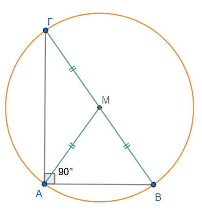
Από την υπόθεση ισχύει: \[AM = \dfrac{B\Gamma}{2} \implies AM = BM = M\Gamma\] Αυτό σημαίνει ότι το σημείο \(M\) ισαπέχει από τις τρεις κορυφές \(A, B\) και \(\Gamma\) του τριγώνου.
Συνεπώς, το σημείο \(M\) είναι το περίκεντρο του τριγώνου \(\triangle AB\Gamma\).
Εφόσον το περίκεντρο \(M\) ανήκει στην πλευρά \(B\Gamma\) (είναι το μέσο της), η πλευρά \(B\Gamma\) αποτελεί διάμετρο του περιγεγραμμένου κύκλου.
Η εγγεγραμμένη γωνία \(\widehat{A}\) βαίνει σε ημικύκλιο, άρα είναι ορθή: \[\widehat{A} = 90^\circ\] Συνεπώς, το τρίγωνο \(\triangle AB\Gamma\) είναι ορθογώνιο στην κορυφή \(A\).
1.1.4 Δ. Ασκήσεις με Πλήρεις Αποδείξεις
Άσκηση 1
Εκφώνηση:
Σε ορθογώνιο τρίγωνο \(\triangle AB\Gamma\) (\(\widehat{A} = 90^\circ\)), φέρουμε το ύψος \(A\Delta\).
Αν \(O_1\) είναι το περίκεντρο του τριγώνου \(\triangle AB\Delta\) και \(O_2\) το περίκεντρο του τριγώνου \(\triangle A\Delta\Gamma\), να αποδείξετε ότι η διάκεντρος \(O_1 O_2\) είναι παράλληλη προς την υποτείνουσα \(B\Gamma\) και ισούται με το μισό της: \(O_1 O_2 = \dfrac{B\Gamma}{2}\).
Απόδειξη:
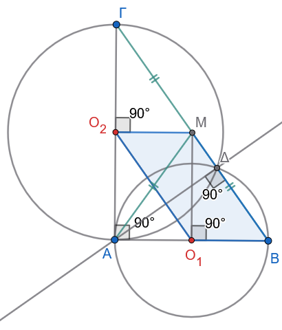
Βήμα 1: Τα περίκεντρα \(O_1\) και \(O_2\)
Στο ορθογώνιο τρίγωνο \(\triangle AB\Delta\) (\(\widehat{\Delta} = 90^\circ\)), το περίκεντρο \(O_1\) είναι το μέσο της υποτείνουσας \(AB\).
Άρα: \[AO_1 = O_1B = \frac{AB}{2}\]Στο ορθογώνιο τρίγωνο \(\triangle A\Delta\Gamma\) (\(\widehat{\Delta} = 90^\circ\)), το περίκεντρο \(O_2\) είναι το μέσο της υποτείνουσας \(A\Gamma\).
Άρα: \[AO_2 = O_2\Gamma = \frac{A\Gamma}{2}\]
Βήμα 2: Κατασκευή του ορθογωνίου \(AO_1 M O_2\)
Από το \(O_2\) φέρουμε κάθετη στην \(A\Gamma\) και από το \(O_1\) φέρουμε κάθετη στην \(AB\). Αυτές οι δύο γραμμές τέμνονται σε ένα σημείο \(M\) (μέσο της ΒΓ) και είναι οι μεσοκάθετες των ΑΒ και ΑΓ αφού \(Ο_1\) και \(Ο_2\) είναι μέσα.
Το τετράπλευρο \(AO_1MO_2\) έχει τρεις ορθές γωνίες (\(\widehat{A} = 90^\circ\), \(\widehat{O_1} = 90^\circ\), \(\widehat{O_2} = 90^\circ\)), επομένως είναι ορθογώνιο παραλληλόγραμμο.
Από τις ιδιότητες του ορθογωνίου:
Οι απέναντι πλευρές είναι ίσες: \[O_2M = // AO_1 = O_1B\] \[O_1M = // AO_2 = O_2\Gamma\]
Η γωνία \(\widehat{O_2 M O_1} = 90^\circ\).
Βήμα 3: Το παραλληλόγραμμο \(O_2 M B O_1\) και το τελικό συμπέρασμα
Κοιτάμε το τετράπλευρο \(O_2 M B O_1\):
- \(O_2M \parallel O_1B\) (και τα δύο είναι κάθετα στην \(A\Gamma\))
- \(O_2M = O_1B\)
Ένα τετράπλευρο που έχει δύο απέναντι πλευρές ίσες και παράλληλες είναι παραλληλόγραμμο!
Άρα και οι άλλες δύο απέναντι πλευρές του είναι παράλληλες και ίσες: \[O_1 O_2 \parallel MB \implies O_1 O_2 \parallel B\Gamma\] \[O_1 O_2 = MB = \frac{B\Gamma}{2}\]
Άσκηση 2
Εκφώνηση: Δίνεται ισοσκελές τρίγωνο \(\triangle AB\Gamma\) (\(AB = A\Gamma\)) εγγεγραμμένο σε κύκλο με κέντρο \(O\). Να αποδείξετε ότι η διάμεσος \(AM\) προς τη βάση \(B\Gamma\) διέρχεται από το περίκεντρο \(O\).
Απόδειξη:
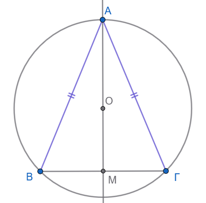
Εφόσον το τρίγωνο \(\triangle AB\Gamma\) είναι ισοσκελές με \(AB = A\Gamma\), η διάμεσος \(AM\) προς τη βάση \(B\Gamma\) είναι ταυτόχρονα και ύψος του τριγώνου.
Συνεπώς, η ευθεία \(AM\) είναι κάθετη στη βάση \(B\Gamma\) στο μέσο της \(M\), δηλαδή η ευθεία \(AM\) είναι η μεσοκάθετος της πλευράς \(B\Gamma\).
Από το θεώρημα του περικέντρου, το κέντρο \(O\) του περιγεγραμμένου κύκλου είναι το σημείο τομής των μεσοκαθέτων των πλευρών του τριγώνου.
Άρα, το \(O\) ανήκει υποχρεωτικά στη μεσοκάθετο της \(B\Gamma\), η οποία είναι η ευθεία \(AM\).
Συνεπώς, η διάμεσος \(AM\) διέρχεται από το περίκεντρο \(O\).
Άσκηση 3
Εκφώνηση: Δίνεται τρίγωνο \(\triangle AB\Gamma\) με περίκεντρο \(O\). Αν \(M, N\) είναι τα μέσα των πλευρών \(AB, A\Gamma\) αντίστοιχα, να αποδείξετε ότι το τετράπλευρο \(AMON\) είναι εγγράψιμο σε κύκλο με διάμετρο το τμήμα \(AO\).
Απόδειξη:
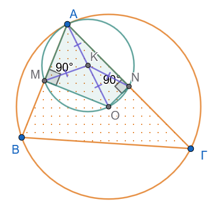
Επειδή το \(M\) είναι το μέσο της χορδής \(AB\) του περιγεγραμμένου κύκλου, η ακτίνα \(OM\) είναι κάθετη στη χορδή: \(OM \perp AB \implies \widehat{AMO} = 90^\circ\).
Επειδή το \(N\) είναι το μέσο της χορδής \(A\Gamma\) του περιγεγραμμένου κύκλου, η ακτίνα \(ON\) είναι κάθετη στη χορδή: \(ON \perp A\Gamma \implies \widehat{ANO} = 90^\circ\).
Τα ορθογώνια τρίγωνα \(\triangle ΑΜΟ\) και \(\triangle ΑΝΟ\) έχουν κοινή υποτείνουσα την ΑΟ.
Αν Κ το μέσον της υποτείνουσας ΑΟ, τότε ΑΚ=ΜΚ=ΟΚ=ΝΚ.
Άρα τα 4 σημεία Α, Μ, Ο και Ν βρίσκονται στον ίδιο κύκλο (Κ,ΚΑ).
Άσκηση 4
Εκφώνηση: Σε κύκλο με κέντρο \(O\) φέρουμε μια διάμετρο \(AB\). Αν \(M\) είναι ένα τυχαίο σημείο της περιφέρειας του κύκλου, να αποδείξετε ότι το σημείο \(O\) είναι το περίκεντρο του τριγώνου \(\triangle MAB\).
Απόδειξη:
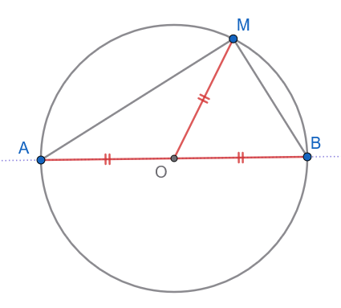
Το σημείο \(O\) είναι το μέσο της διαμέτρου \(AB\).
Οι αποστάσεις του \(O\) από τις κορυφές του τριγώνου είναι ίσες με την ακτίνα \(R\) του κύκλου: \(OA = OB = OM = R\).
Επειδή το \(O\) ισαπέχει από τις τρεις κορυφές του τριγώνου, είναι εξ ορισμού το περίκεντρο του τριγώνου \(\triangle MAB\).
1.2 ΜΕΡΟΣ 2: Ο ΕΓΓΕΓΡΑΜΜΕΝΟΣ ΚΥΚΛΟΣ ΤΡΙΓΩΝΟΥ (INCIRCLE)
1.2.1 Α. Ορισμοί
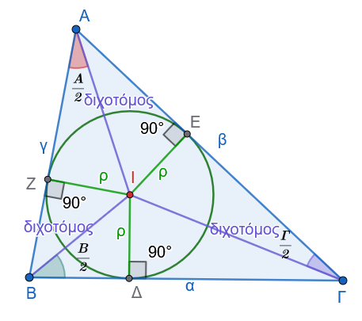
Εγγεγραμμένος Κύκλος: Ο κύκλος ο οποίος βρίσκεται στο εσωτερικό ενός τριγώνου \(\triangle AB\Gamma\) και εφάπτεται εσωτερικά και στις τρεις πλευρές του (\(AB, B\Gamma, A\Gamma\)).
Έγκεντρο: Το κέντρο του εγγεγραμμένου κύκλου ονομάζεται έγκεντρο, συμβολίζεται με το γράμμα \(I\), και είναι το σημείο στο οποίο συντρέχουν οι εσωτερικές διχοτόμοι των τριών γωνιών του τριγώνου.
Ακτίνα \(\rho\): Η ακτίνα του εγγεγραμμένου κύκλου συμβολίζεται με \(\rho\) και ισούται με την κάθετη απόσταση του εγκέντρου \(I\) από οποιαδήποτε πλευρά του τριγώνου.
1.2.2 Β. Θεωρήματα & Πορίσματα
Θεώρημα 2
Οι διχοτόμοι των τριών εσωτερικών γωνιών κάθε τριγώνου συντρέχουν σε ένα σημείο, το οποίο είναι το έγκεντρο του τριγώνου.
Απόδειξη:
Έστω τρίγωνο \(\triangle AB\Gamma\). (Σχήμα 2)
Οι εσωτερικές διχοτόμοι των γωνιών \(\widehat{B}\) και \(\widehat{\Gamma}\) τέμνονται σε ένα σημείο \(I\), το οποίο βρίσκεται στο εσωτερικό του τριγώνου.
Φέρουμε τις κάθετες αποστάσεις του \(I\) προς τις πλευρές του τριγώνου: \(I\Delta \perp B\Gamma\), \(IE \perp A\Gamma\) και \(IZ \perp AB\).
Επειδή το \(I\) ανήκει στη διχοτόμο της γωνίας \(\widehat{B}\), ισαπέχει από τις πλευρές \(AB\) και \(B\Gamma\): \[IZ = I\Delta \quad (1)\]
Επειδή το \(I\) ανήκει στη διχοτόμο της γωνίας \(\widehat{\Gamma}\), ισαπέχει από τις πλευρές \(A\Gamma\) και \(B\Gamma\): \[IE = I\Delta \quad (2)\]
Από τις σχέσεις \((1)\) και \((2)\) προκύπτει άμεσα ότι: \[IZ = IE\] Η σχέση αυτή δηλώνει ότι το σημείο \(I\) ισαπέχει από τις πλευρές \(AB\) και \(A\Gamma\) της γωνίας \(\widehat{A}\).
Επειδή το \(I\) είναι εσωτερικό σημείο της γωνίας \(\widehat{A}\) και ισαπέχει από τις πλευρές της, ανήκει υποχρεωτικά στη διχοτόμο της γωνίας \(\widehat{A}\).
Συνεπώς, οι τρεις εσωτερικές διχοτόμοι συντρέχουν στο σημείο \(I\), το οποίο ισαπέχει από τις πλευρές του τριγώνου με απόσταση ίση με την ακτίνα του εγγεγραμμένου κύκλου: \(\rho = I\Delta = IE = IZ\).
1.2.3 Γ. Εφαρμογές
Εφαρμογή 3
Να αποδειχθεί ότι η γωνία \(\widehat{BI\Gamma}\), που σχηματίζεται στο έγκεντρο \(I\) από τις διχοτόμους των γωνιών \(\widehat{B}\) και \(\widehat{\Gamma}\) του τριγώνου \(\triangle AB\Gamma\), ισούται με: \[\widehat{BI\Gamma} = 90^\circ + \dfrac{\widehat{A}}{2}\]
Λύση: (Σχήμα 2)
Στο τρίγωνο \(\triangle IB\Gamma\), το άθροισμα των εσωτερικών γωνιών είναι \(180^\circ\): \[\widehat{BI\Gamma} + \widehat{I B\Gamma} + \widehat{I\Gamma B} = 180^\circ \quad (1)\] Επειδή οι \(BI\) και \(\Gamma I\) είναι οι διχοτόμοι των γωνιών \(\widehat{B}\) και \(\widehat{\Gamma}\) του τριγώνου \(\triangle AB\Gamma\), ισχύει: \[\widehat{I B\Gamma} = \dfrac{\widehat{B}}{2} \quad \text{και} \quad \widehat{I\Gamma B} = \dfrac{\widehat{\Gamma}}{2}\] Αντικαθιστώντας τις τιμές αυτές στη σχέση \((1)\), έχουμε: \[\widehat{BI\Gamma} = 180^\circ - \left(\dfrac{\widehat{B}}{2} + \dfrac{\widehat{\Gamma}}{2}\right) = 180^\circ - \dfrac{\widehat{B} + \widehat{\Gamma}}{2} \quad (2)\] Στο αρχικό τρίγωνο \(\triangle AB\Gamma\) ισχύει: \[\widehat{A} + \widehat{B} + \widehat{\Gamma} = 180^\circ \implies \widehat{B} + \widehat{\Gamma} = 180^\circ - \widehat{A}\] Αντικαθιστούμε στη σχέση \((2)\): \[\widehat{BI\Gamma} = 180^\circ - \dfrac{180^\circ - \widehat{A}}{2} = 180^\circ - 90^\circ + \dfrac{\widehat{A}}{2} = 90^\circ + \dfrac{\widehat{A}}{2}\] Συνεπώς, αποδείχθηκε η ζητούμενη σχέση: \(\widehat{BI\Gamma} = 90^\circ + \dfrac{\widehat{A}}{2}\).
Εφαρμογή 4
Αν \(\tau = \dfrac{\alpha + \beta + \gamma}{2}\) είναι η ημιπερίμετρος του τριγώνου \(\triangle AB\Gamma\), να αποδειχθεί ότι οι αποστάσεις των κορυφών \(A\), \(B\) και \(\Gamma\) από τα σημεία επαφής του εγγεγραμμένου κύκλου με τις πλευρές ισούνται με \(\tau - \alpha\), \(\tau - \beta\) και \(\tau - \gamma\) αντίστοιχα.
Λύση:
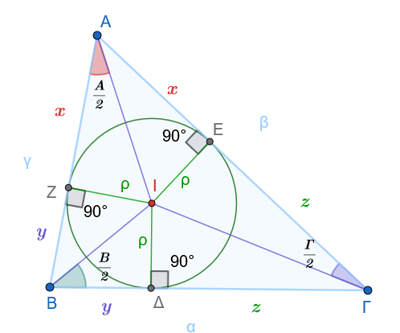
Έστω \(E, Z, \Delta\) τα σημεία επαφής του εγγεγραμμένου κύκλου με τις πλευρές \(A\Gamma, AB\) και \(B\Gamma\) αντίστοιχα.
Τα εφαπτόμενα τμήματα από κάθε κορυφή προς τον κύκλο είναι ίσα μεταξύ τους:
Από την κορυφή \(A\): \(AE = AZ = x\)
Από την κορυφή \(B\): \(B\Delta = BZ = y\)
Από την κορυφή \(\Gamma\): \(\Gamma\Delta = \Gamma E = z\)
Εκφράζουμε τα μήκη των πλευρών του τριγώνου \(\triangle AB\Gamma\) ως προς τα \(x, y, z\): \[\alpha = B\Gamma = y + z\] \[\beta = A\Gamma = x + z\] \[\gamma = AB = x + y\]
Αθροίζουμε τις τρεις σχέσεις κατά μέλη: \[\alpha + \beta + \gamma = 2(x + y + z) \implies 2\tau = 2(x + y + z) \implies \tau = x + y + z \quad (1)\] Από τη σχέση \((1)\) υπολογίζουμε το \(x\): \[x = \tau - (y + z) \implies AE = AZ = \tau - \alpha \quad (2)\] Με όμοιο τρόπο, υπολογίζουμε τα \(y\) και \(z\): \[y = \tau - (x + z) \implies B\Delta = BZ = \tau - \beta \quad (3)\] \[z = \tau - (x + y) \implies \Gamma\Delta = \Gamma E = \tau - \gamma \quad (4)\] Οι σχέσεις αυτές αποδεικνύουν πλήρως το ζητούμενο.
1.2.4 Δ. Ασκήσεις με Πλήρεις Αποδείξεις
Άσκηση 6
Εκφώνηση: Σε ορθογώνιο τρίγωνο \(\triangle AB\Gamma\) (\(\widehat{A} = 90^\circ\)), να αποδειχθεί ότι η ακτίνα \(\rho\) του εγγεγραμμένου κύκλου ισούται με: \[\rho = \tau - \alpha = \dfrac{\beta + \gamma - \alpha}{2}\]
Απόδειξη:
Έστω \(\Delta, E, Z\) τα σημεία επαφής του εγγεγραμμένου κύκλου με τις πλευρές \(B\Gamma, A\Gamma\) και \(AB\) αντίστοιχα.
Στο τετράπλευρο \(AEIZ\):
Οι γωνίες \(\widehat{AEI}\) και \(\widehat{AZI}\) είναι ορθές (\(90^\circ\)), καθώς οι ακτίνες του εγγεγραμμένου κύκλου είναι κάθετες στις εφαπτόμενες πλευρές.
Η γωνία \(\widehat{EAZ}\) (δηλαδή η γωνία \(\widehat{A}\) του τριγώνου) είναι ορθή (\(90^\circ\)) από την υπόθεση.
Εφόσον το τετράπλευρο \(AEIZ\) έχει τρεις ορθές γωνίες, είναι ορθογώνιο.
Επιπλέον, οι διαδοχικές πλευρές του \(IE\) και \(IZ\) είναι ίσες με την ακτίνα \(\rho\) του κύκλου (\(IE = IZ = \rho\)).
Ένα ορθογώνιο με δύο διαδοχικές πλευρές ίσες είναι τετράγωνο.
Συνεπώς: \[AE = AZ = \rho\] Από την Εφαρμογή 4, γνωρίζουμε ότι το εφαπτόμενο τμήμα από την κορυφή \(A\) ισούται με \(AE = \tau - \alpha\).
Άρα: \[\rho = \tau - \alpha\] Αντικαθιστώντας την τιμή του \(\tau = \dfrac{\alpha + \beta + \gamma}{2}\), έχουμε: \[\rho = \dfrac{\alpha + \beta + \gamma}{2} - \alpha = \dfrac{\beta + \gamma - \alpha}{2}\]
Άσκηση 7
Εκφώνηση: Αν \(I\) είναι το έγκεντρο του τριγώνου \(\triangle AB\Gamma\) και \(E, Z\) είναι τα σημεία επαφής του εγγεγραμμένου κύκλου με τις πλευρές \(A\Gamma\) και \(AB\) αντίστοιχα, να αποδείξετε ότι η ευθεία \(AI\) είναι κάθετη στο ευθύγραμμο τμήμα \(EZ\).
Απόδειξη:
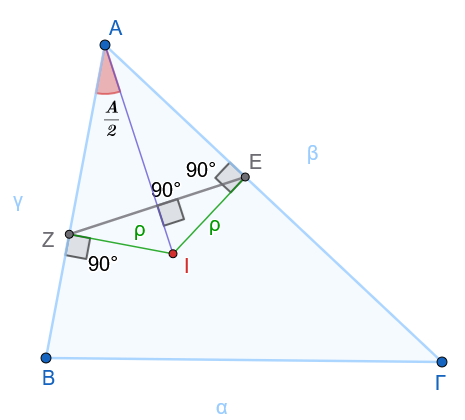
Από την Εφαρμογή 4, τα εφαπτόμενα τμήματα από την κορυφή \(A\) είναι ίσες: \(AE = AZ = \tau - \alpha\).
Συνεπώς, το τρίγωνο \(\triangle AEZ\) είναι ισοσκελές με κορυφή το \(A\).
Η ευθεία \(AI\) είναι η διχοτόμος της γωνίας \(\widehat{A}\) του τριγώνου \(\triangle AB\Gamma\), καθώς το έγκεντρο \(I\) είναι το σημείο τομής των εσωτερικών διχοτόμων του τριγώνου.
Σε κάθε ισοσκελές τρίγωνο, η διχοτόμος της γωνίας της κορυφής είναι ταυτόχρονα διάμεσος και ύψος προς τη βάση.
Συνεπώς, η διχοτόμος \(AI\) είναι κάθετη στη βάση \(EZ\): \[AI \perp EZ\]
1.3 ΜΕΡΟΣ 3: ΟΙ ΠΑΡΕΓΓΕΓΡΑΜΜΕΝΟΙ ΚΥΚΛΟΙ ΤΡΙΓΩΝΟΥ (EXCIRCLES)
1.3.1 Α. Ορισμοί
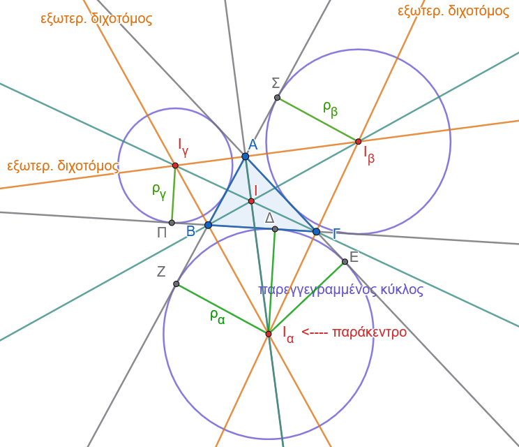
Παρεγγεγραμμένος Κύκλος: Ο κύκλος ο οποίος βρίσκεται στο εξωτερικό ενός τριγώνου \(\triangle AB\Gamma\), εφάπτεται εξωτερικά σε μία πλευρά του τριγώνου (π.χ. στην πλευρά \(B\Gamma\)) και στις προεκτάσεις των άλλων δύο πλευρών (\(AB\) και \(A\Gamma\)). Κάθε τρίγωνο έχει ακριβώς τρεις παρεγγεγραμμένους κύκλους.
Παράκεντρα: Τα κέντρα των τριών αυτών κύκλων ονομάζονται παράκεντρα και συμβολίζονται με \(I_\alpha, I_\beta, I_\gamma\) αντίστοιχα για τις πλευρές \(\alpha, \beta, \gamma\).
Ακτίνες \(\rho_α, \rho_β, \rho_γ\): Οι ακτίνες των τριών παρεγγεγραμμένων κύκλων συμβολίζονται με \(\rho_α, \rho_β\) και \(\rho_γ\) αντίστοιχα.
1.3.2 Β. Θεωρήματα & Πορίσματα
Θεώρημα 3
Η εσωτερική διχοτόμος μιας γωνίας τριγώνου (π.χ. της \(\widehat{A}\)) και οι εξωτερικές διχοτόμοι των δύο άλλων γωνιών (των \(\widehat{B}\) και \(\widehat{\Gamma}\)) συντρέχουν στο παράκεντρο \(I_a\) του τριγώνου.
Απόδειξη: (Σχήμα 3)
Έστω τρίγωνο \(\triangle AB\Gamma\).
Οι εξωτερικές διχοτόμοι των γωνιών \(\widehat{B}\) και \(\widehat{\Gamma}\) τέμνονται σε ένα σημείο \(I_a\) στο εξωτερικό του τριγώνου.
Φέρουμε τις κάθετες αποστάσεις του σημείου \(I_a\) προς τις ευθείες των πλευρών: \(I_a\Delta \perp B\Gamma\), \(I_aE \perp A\Gamma\) (στην προέκταση) και \(I_aZ \perp AB\) (στην προέκταση).
Επειδή το \(I_a\) ανήκει στην εξωτερική διχοτόμο της γωνίας \(\widehat{B}\), ισαπέχει από τις ευθείες \(B\Gamma\) και \(AB\): \[I_aZ = I_a\Delta \quad (1)\]
Επειδή το \(I_a\) ανήκει στην εξωτερική διχοτόμο της γωνίας \(\widehat{\Gamma}\), ισαπέχει από τις ευθείες \(B\Gamma\) και \(A\Gamma\): \[I_aE = I_a\Delta \quad (2)\]
Από τις σχέσεις \((1)\) και \((2)\) προκύπτει άμεσα ότι: \[I_aZ = I_aE\] Η σχέση αυτή δηλώνει ότι το σημείο \(I_a\) ισαπέχει από τις ευθείες των πλευρών \(AB\) και \(A\Gamma\) της γωνίας \(\widehat{A}\).
Επειδή το \(I_a\) βρίσκεται στο εσωτερικό της γωνίας \(\widehat{A}\) και ισαπέχει από τις πλευρές της, ανήκει υποχρεωτικά στη διχοτόμο της εσωτερικής γωνίας \(\widehat{A}\).
Συνεπώς, οι τρεις διχοτόμοι (η εσωτερική της \(\widehat{A}\) και οι εξωτερικές των \(\widehat{B}, \widehat{\Gamma}\)) συντρέχουν στο σημείο \(I_a\), το οποίο είναι το κέντρο του παρεγγεγραμμένου κύκλου που εφάπτεται στην πλευρά \(B\Gamma\) με ακτίνα \(\rho_a = I_a\Delta = I_aE = I_aZ\).
1.3.3 Γ. Εφαρμογές
Εφαρμογή 5
Να αποδειχθεί ότι η γωνία \(\widehat{B I_a \Gamma}\), που σχηματίζεται στο παράκεντρο \(I_a\) από τις εξωτερικές διχοτόμους των γωνιών \(\widehat{B}\) και \(\widehat{\Gamma}\) του τριγώνου \(\triangle AB\Gamma\), ισούται με: \[\widehat{B I_a \Gamma} = 90^\circ - \dfrac{\widehat{A}}{2}\]
Λύση:
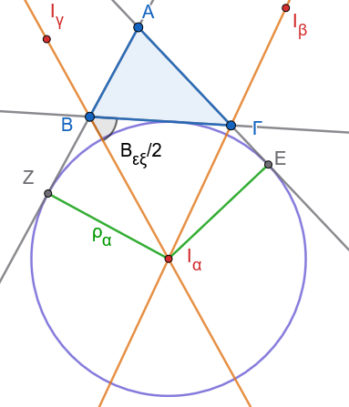
Στο τρίγωνο \(\triangle I_a B \Gamma\), το άθροισμα των εσωτερικών γωνιών είναι \(180^\circ\): \[\widehat{B I_a \Gamma} + \widehat{I_a B \Gamma} + \widehat{I_a \Gamma B} = 180^\circ \quad (1)\]
Η γωνία \(\widehat{I_a B \Gamma}\) είναι το μισό της εξωτερικής γωνίας \(\widehat{B}_{ex}\), δηλαδή:
\[\widehat{I_a B \Gamma} = \dfrac{\widehat{B}_{ex}}{2} = \dfrac{180^\circ - \widehat{B}}{2} = 90^\circ - \dfrac{\widehat{B}}{2}\]
Η γωνία \(\widehat{I_a \Gamma B}\) είναι το μισό της εξωτερικής γωνίας \(\widehat{\Gamma}_{ex}\), δηλαδή: \[\widehat{I_a \Gamma B} = \dfrac{\widehat{\Gamma}_{ex}}{2} = \dfrac{180^\circ - \widehat{\Gamma}}{2} = 90^\circ - \dfrac{\widehat{\Gamma}}{2}\]
Αντικαθιστούμε τις τιμές αυτές στη σχέση \((1)\): \[\widehat{B I_a \Gamma} = 180^\circ - \left(90^\circ - \dfrac{\widehat{B}}{2} + 90^\circ - \dfrac{\widehat{\Gamma}}{2}\right) = 180^\circ - 180^\circ + \dfrac{\widehat{B} + \widehat{\Gamma}}{2} = \dfrac{\widehat{B} + \widehat{\Gamma}}{2} \quad (2)\] Στο αρχικό τρίγωνο \(\triangle AB\Gamma\) ισχύει: \[\widehat{B} + \widehat{\Gamma} = 180^\circ - \widehat{A}\] Αντικαθιστούμε στη σχέση \((2)\): \[\widehat{B I_a \Gamma} = \dfrac{180^\circ - \widehat{A}}{2} = 90^\circ - \dfrac{\widehat{A}}{2}\] Συνεπώς, αποδείχθηκε η ζητούμενη σχέση: \(\widehat{B I_a \Gamma} = 90^\circ - \dfrac{\widehat{A}}{2}\).
Εφαρμογή 6
Αν \(\tau\) είναι η ημιπερίμετρος του τριγώνου \(\triangle AB\Gamma\), να αποδειχθεί ότι οι αποστάσεις της κορυφής \(A\) από τα σημεία επαφής του παρεγγεγραμμένου κύκλου \((I_a, \rho_a)\) με τις προεκτάσεις των πλευρών \(AB\) και \(A\Gamma\) είναι ίσες με την ημιπερίμετρο \(\tau\): \(AZ = AE = \tau\).
Λύση:
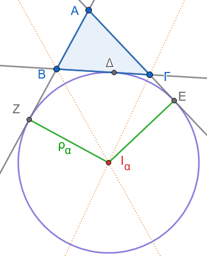
Έστω \(Z\) και \(E\) τα σημεία επαφής του παρεγγεγραμμένου κύκλου με τις προεκτάσεις των πλευρών \(AB\) και \(A\Gamma\) αντίστοιχα, και \(\Delta\) το σημείο επαφής με την πλευρά \(B\Gamma\).
Τα εφαπτόμενα τμήματα από την κορυφή \(A\) προς τον κύκλο είναι ίσα: \(AZ = AE\).
Αναλύουμε το άθροισμα των δύο αυτών ίσων τμημάτων: \[AZ + AE = (AB + BZ) + (A\Gamma + \Gamma E) \quad (1)\] Τα εφαπτόμενα τμήματα από τις κορυφές \(B\) και \(\Gamma\) προς τον κύκλο είναι επίσης ίσα:
Από την κορυφή \(B\): \(BZ = B\Delta\)
Από την κορυφή \(\Gamma\): \(\Gamma E = \Gamma\Delta\)
Αντικαθιστούμε τις ισότητες αυτές στη σχέση \((1)\): \[AZ + AE = (AB + B\Delta) + (A\Gamma + \Gamma\Delta) = AB + A\Gamma + (B\Delta + \Gamma\Delta) = \gamma + \beta + \alpha\] Εφόσον η περίμετρος του τριγώνου είναι \(\alpha + \beta + \gamma = 2\tau\), η σχέση γίνεται: \[AZ + AE = 2\tau\] Επειδή \(AZ = AE\), προκύπτει άμεσα ότι: \[AZ = AE = \tau\] Δηλαδή, η απόσταση από την κορυφή μέχρι τα σημεία επαφής στις προεκτάσεις ισούται με την ημιπερίμετρο του τριγώνου.
1.3.4 Δ. Ασκήσεις με Πλήρεις Αποδείξεις
Άσκηση 8
Εκφώνηση: Να αποδείξετε ότι το σημείο επαφής \(\Delta_1\) του εγγεγραμμένου κύκλου με την πλευρά \(B\Gamma\) και το σημείο επαφής \(\Delta_2\) του παρεγγεγραμμένου κύκλου \(I_a\) με την ίδια πλευρά \(B\Gamma\) είναι σημεία συμμετρικά ως προς το μέσον \(M\) της πλευράς \(B\Gamma\).
Απόδειξη:
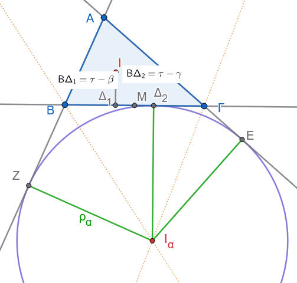
Από την Εφαρμογή 4, η απόσταση του σημείου επαφής \(\Delta_1\) του εγγεγραμμένου κύκλου από την κορυφή \(B\) είναι: \[B\Delta_1 = \tau - \beta\]
Από την Εφαρμογή 6, γνωρίζουμε ότι \(AZ = \tau\), όπου \(Z\) το σημείο επαφής στην προέκταση της \(AB\).
Η απόσταση του σημείου επαφής \(\Delta_2\) του παρεγγεγραμμένου κύκλου από την κορυφή \(B\) είναι: \[B\Delta_2 = BZ = AZ - AB = \tau - \gamma\]
Θέλουμε να αποδείξουμε ότι τα σημεία \(\Delta_1\) και \(\Delta_2\) ισαπέχουν από το μέσο \(M\) της πλευράς \(B\Gamma\), δηλαδή \(M\Delta_1 = M\Delta_2\).
Υπολογίζουμε τις αποστάσεις από την κορυφή \(B\) (λαμβάνοντας υπόψη ότι \(BM = \dfrac{\alpha}{2}\)): \[M\Delta_1 = |BM - B\Delta_1| = \left| \dfrac{\alpha}{2} - (\tau - \beta) \right| = \left| \dfrac{\alpha}{2} - \dfrac{\alpha + \beta + \gamma}{2} + \beta \right| = \left| \dfrac{\beta - \gamma}{2} \right|\] \[M\Delta_2 = |BM - B\Delta_2| = \left| \dfrac{\alpha}{2} - (\tau - \gamma) \right| = \left| \dfrac{\alpha}{2} - \dfrac{\alpha + \beta + \gamma}{2} + \gamma \right| = \left| \dfrac{\gamma - \beta}{2} \right|\] Επειδή \(\left| \dfrac{\beta - \gamma}{2} \right| = \left| \dfrac{\gamma - \beta}{2} \right|\), προκύπτει ότι \(M\Delta_1 = M\Delta_2\).
Συνεπώς, τα δύο σημεία επαφής είναι συμμετρικά ως προς το μέσο \(M\) της πλευράς \(B\Gamma\).
Άσκηση 9
Εκφώνηση: Σε ορθογώνιο τρίγωνο \(\triangle AB\Gamma\) (\(\widehat{A} = 90^\circ\)), να αποδείξετε ότι η ακτίνα \(\rho_a\) του παρεγγεγραμμένου κύκλου που αντιστοιχεί στην υποτείνουσα \(B\Gamma\) είναι ίση με την ημιπερίμετρο \(\tau\) του τριγώνου: \(\rho_a = \tau\).
Απόδειξη:
Σχεδιάστε το σχήμα
Έστω \(E\) και \(Z\) τα σημεία επαφής του παρεγγεγραμμένου κύκλου \(I_a\) με τις προεκτάσεις των κάθετων πλευρών \(A\Gamma\) και \(AB\) αντίστοιχα.
Στο τετράπλευρο \(AZI_aE\):
Οι γωνίες \(\widehat{AZI_a}\) και \(\widehat{AEI_a}\) είναι ορθές (\(90^\circ\)), καθώς οι ακτίνες του παρεγγεγραμμένου κύκλου \(I_aZ\) και \(I_aE\) είναι κάθετες στις εφαπτόμενες ευθείες \(AB\) και \(A\Gamma\).
Η γωνία \(\widehat{A}\) του τριγώνου είναι ορθή (\(90^\circ\)) από την υπόθεση. Συνεπώς, το τετράπλευρο \(AZI_aE\) είναι ορθογώνιο.
Επίσης, οι διαδοχικές πλευρές του \(I_aE\) και \(I_aZ\) είναι ίσες με την ακτίνα \(\rho_a\) του κύκλου (\(I_aE = I_aZ = \rho\_a\)).
Ένα ορθογώνιο με δύο διαδοχικές πλευρές ίσες είναι τετράγωνο.
Συνεπώς: \[AZ = AE = \rho_a\] Από την Εφαρμογή 6, το εφαπτόμενο τμήμα \(AZ\) ισούται με την ημιπερίμετρο \(\tau\).
Άρα: \[\rho_a = \tau\]
Άσκηση 10
Εκφώνηση: Αν η γωνία \(\widehat{B I_a \Gamma}\) που σχηματίζεται στο παράκεντρο \(I_a\) είναι ίση με \(45^\circ\), να αποδείξετε ότι το αρχικό τρίγωνο \(\triangle AB\Gamma\) είναι ορθογώνιο στην κορυφή \(A\).
Απόδειξη:
Σχεδιάστε το σχήμα
Από την Εφαρμογή 5, γνωρίζουμε τη σχέση για τη γωνία του παρακέντρου: \[\widehat{B I_a \Gamma} = 90^\circ - \dfrac{\widehat{A}}{2}\] Από τα δεδομένα της άσκησης, η γωνία αυτή είναι ίση με \(45^\circ\): \[90^\circ - \dfrac{\widehat{A}}{2} = 45^\circ \implies \dfrac{\widehat{A}}{2} = 90^\circ - 45^\circ \implies \dfrac{\widehat{A}}{2} = 45^\circ \implies \widehat{A} = 90^\circ\]
Εφόσον η γωνία \(\widehat{A}\) είναι ίση με \(90^\circ\), το τρίγωνο \(\triangle AB\Gamma\) είναι ορθογώνιο στην κορυφή \(A\).
Άσκηση 11
Εκφώνηση: Να αποδείξετε ότι το εμβαδόν \(E\) του τριγώνου \(\triangle AB\Gamma\) εκφράζεται από τη σχέση \(E = (\tau - \alpha)\rho_a\), όπου \(\rho_a\) η ακτίνα του παρεγγεγραμμένου κύκλου που εφάπτεται στην πλευρά \(\alpha\).
Απόδειξη:
Σχεδιάστε το σχήμα
Το παράκεντρο \(I_a\) συνδέεται με τις κορυφές του τριγώνου \(A, B\) και \(\Gamma\).
Το εμβαδόν του τριγώνου \(\triangle AB\Gamma\) εκφράζεται ως άθροισμα και διαφορά των εμβαδών των επιμέρους τριγώνων: \[E_{AB\Gamma} = E_{I_aAB} + E_{I_aA\Gamma} - E_{I_aB\Gamma}\] Τα ύψη των τριγώνων αυτών με βάσεις \(AB, A\Gamma\) και \(B\Gamma\) είναι αντίστοιχα ίσα με την ακτίνα \(\rho_a\) του παρεγγεγραμμένου κύκλου:
\(E\_{I_aAB} = \dfrac{1}{2} \cdot AB \cdot \rho\_a = \dfrac{1}{2} \gamma \rho*a\)
\(E*{I_aA\Gamma} = \dfrac{1}{2} \cdot A\Gamma \cdot \rho\_a = \dfrac{1}{2} \beta \rho*a\)
\(E*{I_aB\Gamma} = \dfrac{1}{2} \cdot B\Gamma \cdot \rho\_a = \dfrac{1}{2} \alpha \rho\_a\)
Αντικαθιστούμε στην αρχική σχέση: \[E_{AB\Gamma} = \dfrac{1}{2} \gamma \rho_a + \dfrac{1}{2} \beta \rho_a - \dfrac{1}{2} \alpha \rho_a = \dfrac{1}{2} (\beta + \gamma - \alpha) \rho_a\] Εφόσον \(\tau = \dfrac{\alpha + \beta + \gamma}{2} \implies \beta + \gamma - \alpha = 2(\tau - \alpha)\), η σχέση γίνεται: \[E_{AB\Gamma} = \dfrac{1}{2} \cdot 2(\tau - \alpha) \rho_a = (\tau - \alpha)\rho_a\]
Συνεπώς, αποδείχθηκε ότι \(E = (\tau - \alpha)\rho_a\).
Άσκηση 12
Εκφώνηση:
Τρίγωνο \(AB\Gamma\) με \(AB < A\Gamma\).
\(I_a\): το παρέγκεντρο που αντιστοιχεί στην πλευρά \(B\Gamma\) (απέναντι από την κορυφή \(A\)).
Από το \(I_a\) φέρουμε ευθεία παράλληλη στην \(AB\), η οποία τέμνει τη \(B\Gamma\) στο \(\Delta\) και την \(A\Gamma\) στο \(E\).
Ζητούμενο: \(\Delta E = AE - B\Delta\).
Απόδειξη:
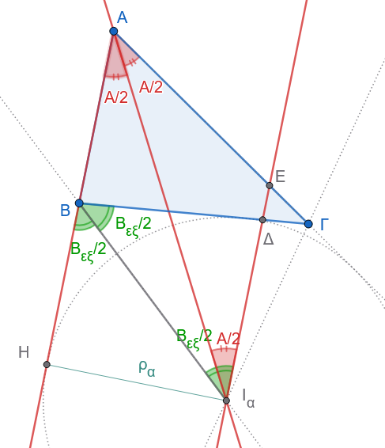
- Ισοσκελές τρίγωνο \(\triangle AEI_a\):
- Το ευθύγραμμο τμήμα \(AI_a\) είναι η εσωτερική διχοτόμος της γωνίας \(\widehat{A}\), άρα: \[\widehat{EAI_a} = \widehat{BAI_a} = \frac{\widehat{A}}{2}\]
- Επειδή \(EI_a \parallel AB\), οι εντός εναλλάξ γωνίες ως προς την τέμνουσα \(AI_a\) είναι ίσες: \[\widehat{EI_aA} = \widehat{BAI_a} = \frac{\widehat{A}}{2}\]
- Επομένως, στο τρίγωνο \(\triangle AEI_a\) ισχύει \(\widehat{EAI_a} = \widehat{EI_aA}\), οπότε είναι ισοσκελές με: \[EI_a = AE \quad (1)\]
- Ισοσκελές τρίγωνο \(\triangle B\Delta I_a\):
- Το ευθύγραμμο τμήμα \(BI_a\) είναι η εξωτερική διχοτόμος της γωνίας \(\widehat{B}\). Αν \(Bx\) είναι η προέκταση της πλευράς \(AB\) πέρα από το \(B\), τότε: \[\widehat{xBI_a} = \widehat{\Delta BI_a} = \frac{\widehat{B}_{\text{εξ}}}{2}\]
- Επειδή \(EI_a \parallel AB\) (και συνεπώς \(\Delta I_a \parallel Bx\)), οι εντός εναλλάξ γωνίες ως προς την τέμνουσα \(BI_a\) είναι ίσες: \[\widehat{\Delta I_a B} = \widehat{xBI_a}\]
- Άρα στο τρίγωνο \(\triangle B\Delta I_a\) ισχύει \(\widehat{\Delta I_a B} = \widehat{\Delta BI_a}\), οπότε είναι ισοσκελές με: \[\Delta I_a = B\Delta \quad (2)\]
- Υπολογισμός του τμήματος \(\Delta E\):
- Το σημείο \(\Delta\) βρίσκεται ανάμεσα στα \(E\) και \(I_a\), επομένως: \[EI_a = \Delta E + \Delta I_a \iff \Delta E = EI_a - \Delta I_a\]
- Αντικαθιστώντας από τις σχέσεις \((1)\) και \((2)\): \[\Delta E = AE - B\Delta\]
Άσκηση 13
Δεδομένα:
- Τρίγωνο \(AB\Gamma\) με \(AB < A\Gamma\).
- \(A\Delta\): εσωτερική διχοτόμος της γωνίας \(\widehat{A}\) (\(\widehat{BA\Delta} = \widehat{\Delta A\Gamma} = \dfrac{\widehat{A}}{2}\)).
- \(M\) σημείο της \(B\Gamma\). Από το \(M\) φέρουμε ευθεία παράλληλη στην \(A\Delta\), που τέμνει την προέκταση της \(BA\) στο \(E\) και την πλευρά \(A\Gamma\) στο \(Z\).
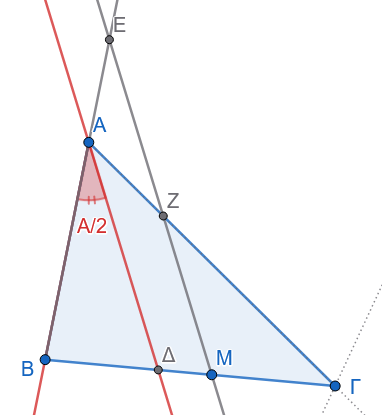
α. Απόδειξη ότι το τρίγωνο \(EAZ\) είναι ισοσκελές:
Επειδή \(EZ \parallel A\Delta\):
Για την τέμνουσα \(A\Gamma\), οι γωνίες \(\widehat{AZE}\) και \(\widehat{\Delta A\Gamma}\) είναι εντός εναλλάξ, άρα: \[\widehat{AZE} = \widehat{\Delta A\Gamma} = \frac{\widehat{A}}{2}\]
Για την τέμνουσα \(EB\), οι γωνίες \(\widehat{AEZ}\) και \(\widehat{BA\Delta}\) είναι εντός εκτός και επί τα αυτά μέρη (αντίστοιχες), άρα: \[\widehat{AEZ} = \widehat{BA\Delta} = \frac{\widehat{A}}{2}\]
Εφόσον \(\widehat{AEZ} = \widehat{AZE} = \dfrac{\widehat{A}}{2}\), το τρίγωνο \(\triangle EAZ\) είναι ισοσκελές με: \[AE = AZ\]
β. Απόδειξη ότι \(BE + \Gamma Z = \text{σταθερό}\):
- Το σημείο \(A\) βρίσκεται μεταξύ των \(B\) και \(E\), άρα: \[BE = AB + AE\]
- Το σημείο \(Z\) βρίσκεται εσωτερικά του τμήματος \(A\Gamma\), άρα: \[\Gamma Z = A\Gamma - AZ\]
- Προσθέτοντας κατά μέλη: \[BE + \Gamma Z = (AB + AE) + (A\Gamma - AZ)\]
- Επειδή από το ερώτημα (α) ισχύει \(AE = AZ\): \[BE + \Gamma Z = AB + A\Gamma = \text{σταθερό}\] (ίσο με το άθροισμα των δύο πλευρών του δοσμένου τριγώνου).
γ. Περίπτωση όπου το \(M\) είναι το μέσο της \(B\Gamma\):
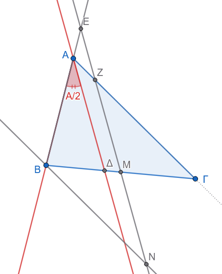
A. Απόδειξη ότι \(BE = \Gamma Z = \dfrac{A\Gamma + AB}{2}\):
Από το \(B\) φέρουμε παράλληλη προς την \(A\Gamma\), η οποία τέμνει την ευθεία \(EZ\) στο σημείο \(N\).
Συγκρίνουμε τα τρίγωνα \(\triangle BMN\) και \(\triangle \Gamma MZ\):
\(BM = M\Gamma\) (το \(M\) είναι μέσο της \(B\Gamma\)).
\(\widehat{BMN} = \widehat{\Gamma MZ}\) (κατακορυφήν γωνίες).
\(\widehat{MBN} = \widehat{M\Gamma Z}\) (εντός εναλλάξ, αφού \(BN \parallel A\Gamma\)).
Άρα \(\triangle BMN \cong \triangle \Gamma MZ\) (\(\Gamma-\Pi-\Gamma\)), οπότε: \[BN = \Gamma Z\]
- Στο τρίγωνο \(\triangle BEN\):
- Επειδή \(BN \parallel AZ\), η εντός εναλλάξ γωνία είναι \(\widehat{BNE} = \widehat{AZE} = \dfrac{\widehat{A}}{2}\).
- Επίσης γνωρίζουμε ότι \(\widehat{BEN} = \dfrac{\widehat{A}}{2}\).
- Άρα το \(\triangle BEN\) είναι ισοσκελές με \(BE = BN\).
Συνεπώς: \[BE = \Gamma Z\]
Χρησιμοποιώντας το αποτέλεσμα του ερωτήματος (β): \[BE + \Gamma Z = A\Gamma + AB \implies 2 \cdot BE = A\Gamma + AB \implies BE = \Gamma Z = \frac{A\Gamma + AB}{2}\]
B. Απόδειξη ότι \(AE = AZ = \dfrac{A\Gamma - AB}{2}\):
Από τη σχέση \(BE = AB + AE\), έχουμε: \[AE = BE - AB = \frac{A\Gamma + AB}{2} - AB = \frac{A\Gamma + AB - 2AB}{2} = \frac{A\Gamma - AB}{2}\]
Επειδή \(AE = AZ\), προκύπτει άμεσα: \[AE = AZ = \frac{A\Gamma - AB}{2}\]
’Ασκηση 14
Δεδομένα & Ζητούμενο
- Τρίγωνο \(AB\Gamma\).
- \(B\Delta\): εσωτερική διχοτόμος της γωνίας \(\widehat{B}\).
- \(Bx\): εξωτερική διχοτόμος της γωνίας \(\widehat{B}\).
- \(E, K\): σημεία της πλευράς (ή της ευθείας) \(AB\).
- Κύκλος \((E, EB)\) που τέμνει τη \(B\Delta\) στο \(Z\).
- Κύκλος \((K, KB)\) που τέμνει τη \(Bx\) στο \(M\).
Ζητούμενο: Να αποδειχθεί ότι \(EZ \parallel MK\).
Απόδειξη
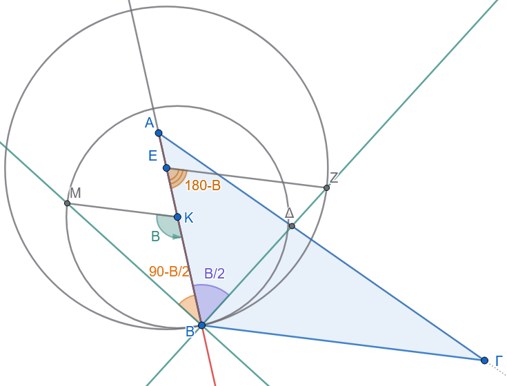
1. Μελέτη του ισοσκελούς τριγώνου \(\triangle EBZ\)
- Επειδή το \(Z\) ανήκει στον κύκλο \((E, EB)\), τα τμήματα \(EB\) και \(EZ\) είναι ακτίνες του ίδιου κύκλου: \[EB = EZ\]
- Άρα το τρίγωνο \(\triangle EBZ\) είναι ισοσκελές με βάση τη \(BZ\).
- Επομένως, οι προσκείμενες στη βάση γωνίες είναι ίσες: \[\widehat{EZB} = \widehat{EBZ} = \frac{\widehat{B}}{2}\] (αφού η \(B\Delta\) είναι η εσωτερική διχοτόμος της \(\widehat{B}\)).
- Η γωνία της κορυφής \(\widehat{ZEB}\) ισούται με: \[\widehat{ZEB} = 180^\circ - (\widehat{EBZ} + \widehat{EZB}) = 180^\circ - 2 \cdot \frac{\widehat{B}}{2} = 180^\circ - \widehat{B} \quad (1)\]
2. Μελέτη του ισοσκελούς τριγώνου \(\triangle KBM\)
- Γνωρίζουμε ότι η εσωτερική και η εξωτερική διχοτόμος μιας γωνίας είναι κάθετες μεταξύ τους: \[B\Delta \perp Bx \implies \widehat{\Delta B x} = 90^\circ\]
- Επομένως, η γωνία \(\widehat{KBM}\) (η γωνία μεταξύ της πλευράς \(AB\) και της εξωτερικής διχοτόμου \(Bx\)) είναι: \[\widehat{KBM} = 90^\circ - \widehat{AB\Delta} = 90^\circ - \frac{\widehat{B}}{2}\]
- Επειδή το \(M\) ανήκει στον κύκλο \((K, KB)\), τα τμήματα \(KB\) και \(KM\) είναι ακτίνες του ίδιου κύκλου: \[KB = KM\]
- Άρα το τρίγωνο \(\triangle KBM\) είναι ισοσκελές με βάση τη \(BM\), οπότε: \[\widehat{KMB} = \widehat{KBM} = 90^\circ - \frac{\widehat{B}}{2}\]
- Η γωνία της κορυφής \(\widehat{BKM}\) ισούται με: \[\widehat{BKM} = 180^\circ - 2 \cdot \widehat{KBM} = 180^\circ - 2\left(90^\circ - \frac{\widehat{B}}{2}\right) = 180^\circ - 180^\circ + \widehat{B} = \widehat{B} \quad (2)\]
3. Απόδειξη Παραλληλίας \(EZ \parallel MK\)
- Θεωρούμε τις ευθείες \(EZ\) και \(MK\) με τέμνουσα την ευθεία \(AB\) (στην οποία ανήκουν τα σημεία \(E, K, B\)).
- Οι γωνίες \(\widehat{ZEB}\) και \(\widehat{BKM}\) είναι εντός εκτός ενναλάξ.
- Το άθροισμά τους από τις σχέσεις \((1)\) και \((2)\) είναι: \[\widehat{ZEB} + \widehat{BKM} = (180^\circ - \widehat{B}) + \widehat{B} = 180^\circ\]
Επειδή οι εντός εκτός ενναλάξ γωνίες είναι παραπληρωματικές (έχουν άθροισμα \(180^\circ\)), οι ευθείες είναι παράλληλες: \[EZ \parallel MK\]
ΚΑΛΗ ΜΕΛΕΤΗ !!!